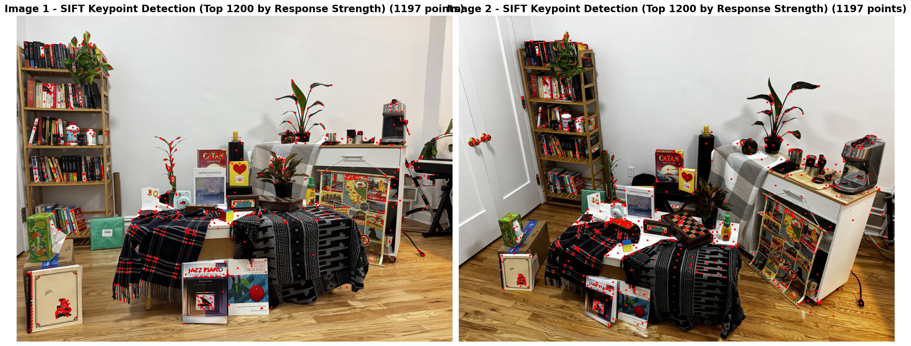
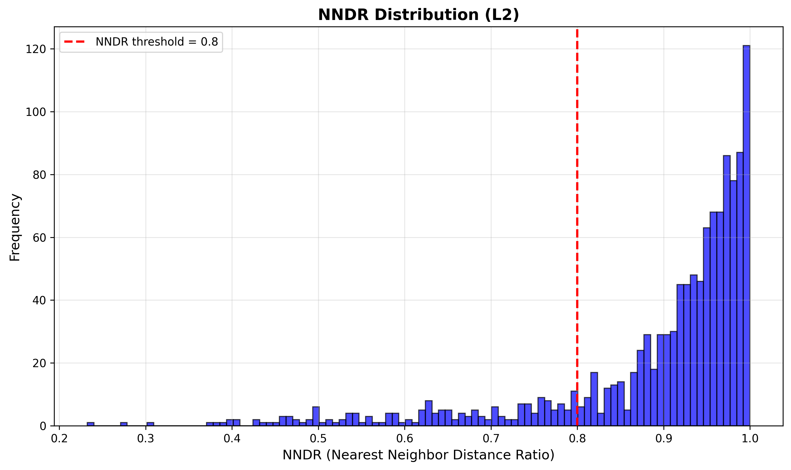
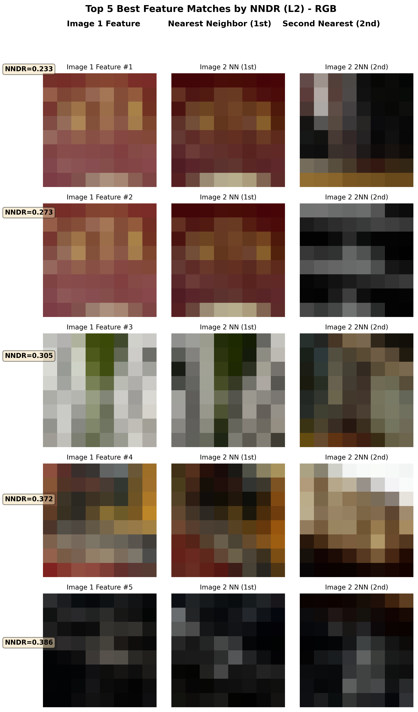
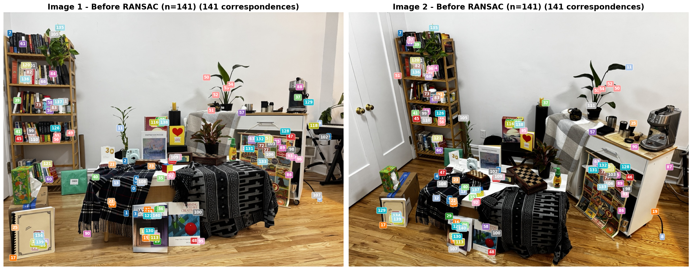
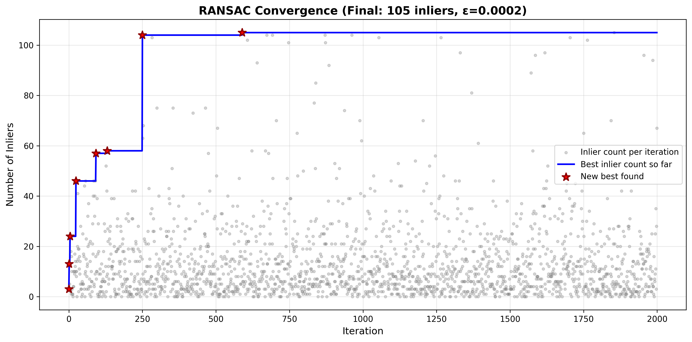
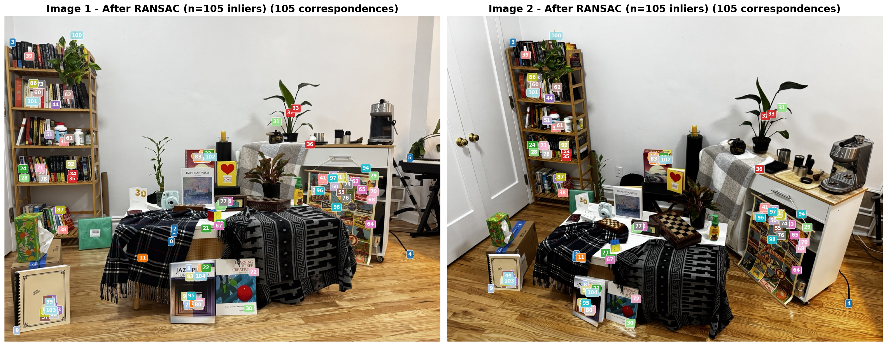

Visualizations — Pipeline Steps
Overview: Full Pipeline Grid

Step 2: SIFT Features Detected

Step 3: NNDR Histogram

Step 3: Top 5 Features Matched (Ranked by NNDR)

Step 3: Correspondences Before RANSAC

Alternate view (with patches):

Step 4: RANSAC Convergence

Step 4: Correspondences After RANSAC (Inliers Only)

Alternate view (with patches):